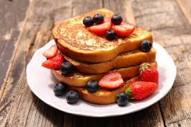

Pancake

Fluffy American-style pancakes served with syrup and butter.
Croissant

A flaky, buttery pastry, perfect with coffee or tea.
French Toast
Classic French toast with a hint of vanilla and cinnamon, perfect for a weekend breakfast.
Avocado Toast

Simple and delicious avocado toast topped with cherry tomatoes and a sprinkle of salt.
Smoothie Bowl

A refreshing smoothie bowl topped with granola, fruit, and seeds for a nutritious breakfast.